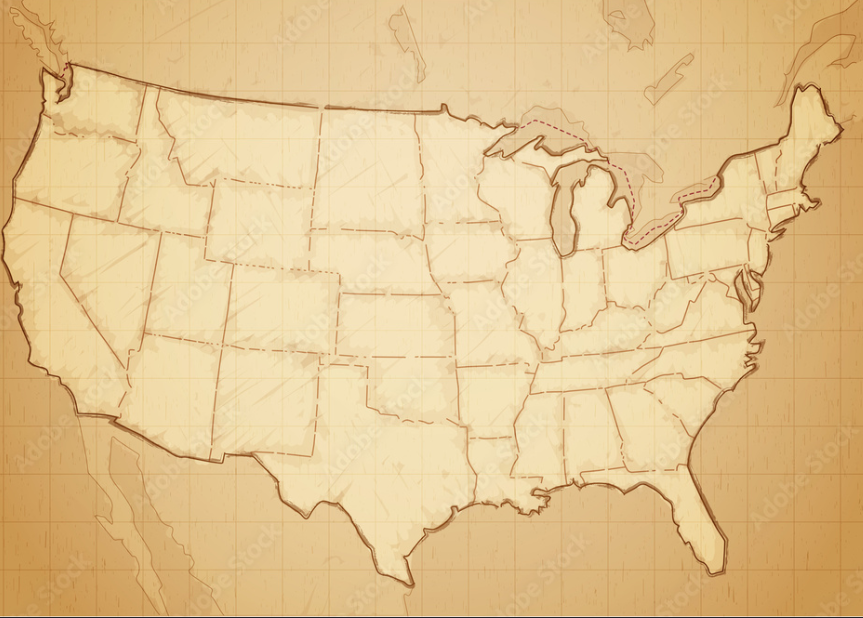
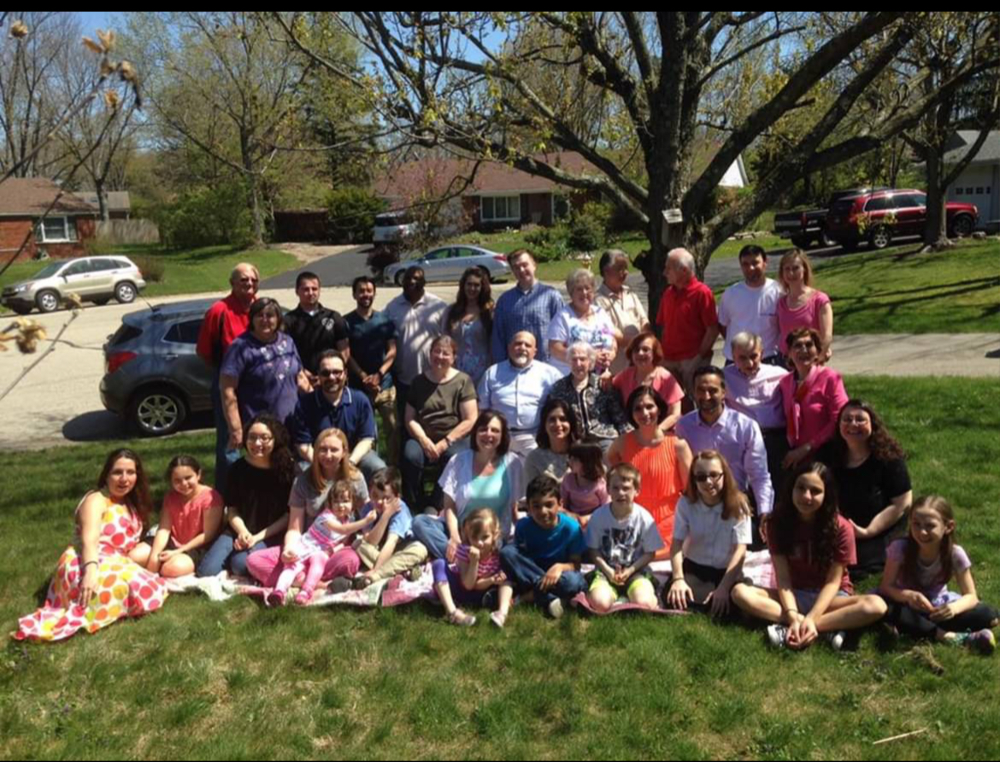
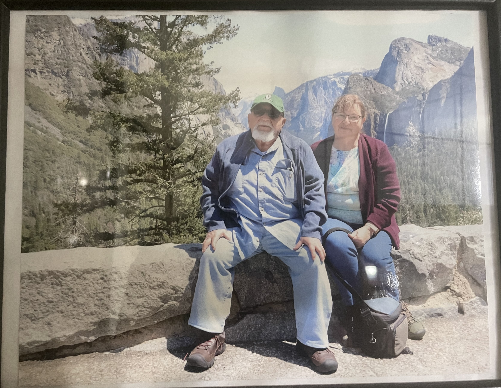
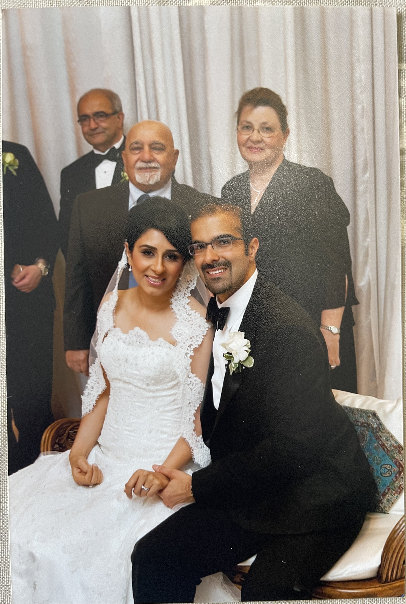
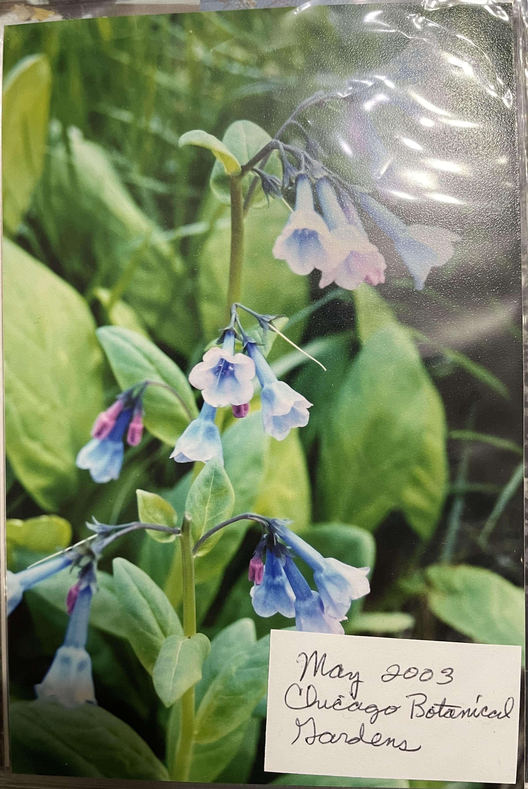
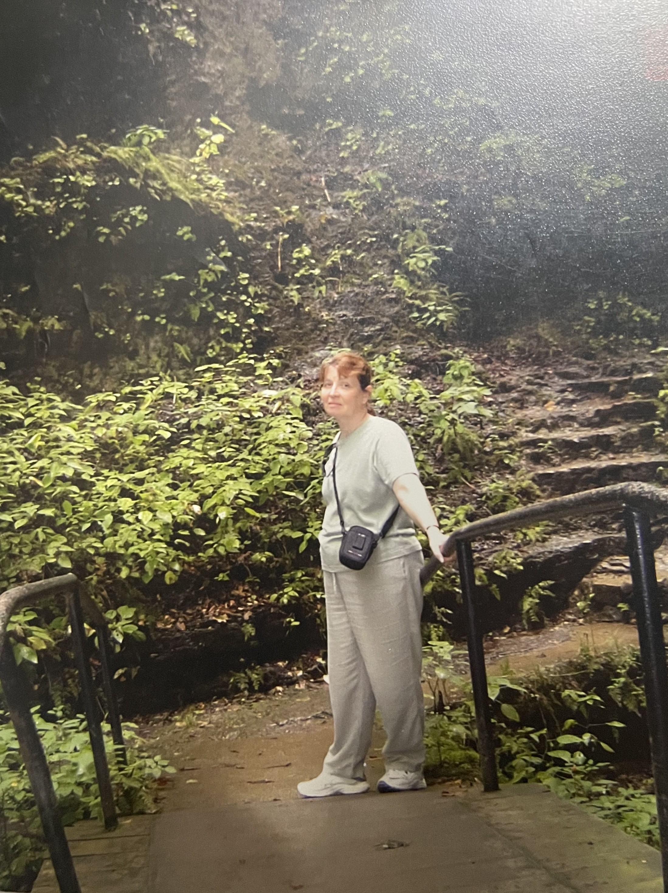
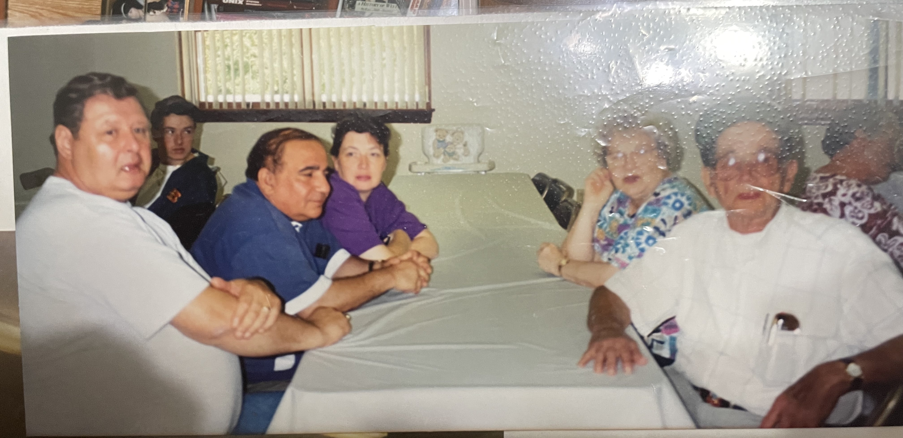

United States Adventures


Home sweet home
2006 - Present
A place for numerous family gatherings and lots of laughter.

Yosemite National Park
2022
A beautiful view in a place that shares political opinions with Grandma. What's better than that?

Dallas, Texas
2013
The grandparents got dolled up for a wedding in Texas. They also got to show off their moves on the dance floor.

Chicago, Illinois
2003
Even in a big city Grandma finds a way to be around plants. The grandparents got to see the Chicago Botanical Gardens.

Portland, Oregon
2025
Grandma and Grandpa ventured up big mountains and hills to see the gorgeous waterfalls. It is a good thing they brought ponchos.

7 Caves, Kentucky
2003
Grandma and Grandpa went to explore different caves in Kentucky. Some were probably big enough that their echo could rival Fereshte's inside voice.

Bristol, Tennessee
1994
Grandma and Grandpa returned to Grandma's country roots in Tennessee for the Pope family reunion. This isn't religious, it's just Grandma's maiden name.